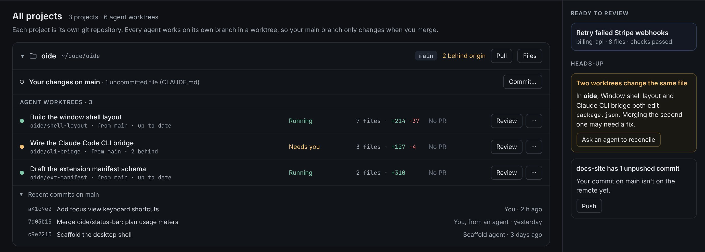

Source control
Every project, every worktree, one screen
See what each agent changed, which branches are behind, and what is ready for review. oIDE warns you when two agents edit the same file, before it turns into a merge conflict.
